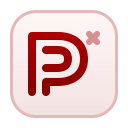

Work in progress
Browser tools are currently in development.
The Kreativ Sound tools area is being rebuilt. Preset Mutator is the first upcoming browser tool, with more experiments planned later.

Preset Mutator
Load one Vital preset, bias the mutation, and push it into new preset directions without leaving the browser.
The first public tool release is being prepared now.
Current tools status
- The public tools area is being repositioned and is not being promoted as a finished suite.
- Preset Mutator is the current focus and the next announced browser tool.
- More audio and preset utilities may return later once the direction is tighter.